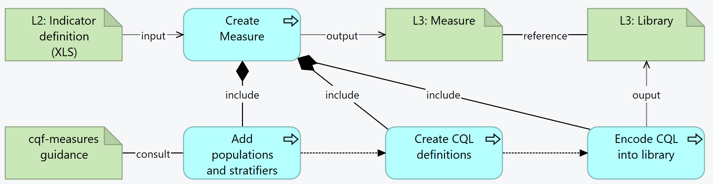

DRAFT SMART Guidelines L3 SOP, published by WHO. This guide is not an authorized publication; it is the continuous build for version 0.2.1 built by the FHIR (HL7® FHIR® Standard) CI Build. This version is based on the current content of https://github.com/WorldHealthOrganization/smart-ig-starter-kit and changes regularly. See the Directory of published versions
Indicators
Indicators are a machine-readable expressions that define the indicator and its input variables, population, and stratifiers. Indicators are expressed using FHIR Measure resource.
- L2 indicator definition
- Data dictionary
- CQL dependencies
Outputs
- Measure FHIR artifact
- Example MeasureReport corresponding to the test / example data included
Activities
Measures are FHIR resources and can refer to CQL libraries.

Summary: For each indicator in the L2, the L3 author creates a Measure resource. This includes adding populations and stratifiers (consulting the CQF-Measures guidance). The create the CQL definitions needed for the calculations, which will be encoded into the Library resources.
- For each indicator in the L2, create a Measure
- a. The Measure SHALL conform to the appropriate scoring profile based on the scoring type:
- i. Proportion - CQFMProportionMeasure
- ii. Ratio - CQFMRatioMeasure
- iii. Cohort - CQFMCohortMeasure
- iv. ContinuousVariable - CQFMContinuousVariableMeasure
- b. NOTE: Proportion measures with an estimated denominator are modeled as continuous variable measures to allow the metric to be collected and analyzed downstream as a proportion measure when the estimated denominator is known
- c. The Measure ID should be derived from the indicator code, e.g. IMMZ.IND.08 -> IMMZIND08
- d. Url: The URL SHALL be: [base canonical]/Measure/[id]
- e. Version: Do not set the version element, it will be set by the publication process
- f. Name: The Name SHALL be the same as the id
- g. Title: The L2 Indicator ID e.g. IMMZ.IND.08 Immunization coverage for Measles containing vaccine (Estimated Denominator)
- h. Description: The long description of the indicator (i.e. the indicator description)
- Create an “indicator” logic library specific to the measure, e.g. IMMZIND08Logic
- a. The logic library SHALL contain expressions for each population criteria appropriate to the scoring type of the measure
- b. The logic library SHALL make use of an IndicatorElements library to reference data elements from the guideline
- c. The logic library MAY make use of an IndicatorLogic library to share common logic between multiple indicators in the guideline
- Create a
group appropriate to the scoring type (only one group is supported)
- a. group.id SHALL be the same as the name of the measure
- b. create populations appropriate to the scoring type (/measure-conformance.html#criteria-names)
- c. each population references an expression in the indicator library
- Create or reuse a CQL library that contains the definitions and functions that are needed for the Measure
-
Add the canonical URL of the Library to the Measure
- Depending on the type/purpose of the indicator, define the value for the measure
scoring.
-
Add the type and improvementNotation
-
From the scoring, see what populations are permitted - according to the CQF Guidance
- For each population, define the code and id, the description, and the cql expression that evaluates the population. For example,
```
- group
- id = “IMMZIND08”
- population[0]
- id = “measure-population”
- code = $measure-population#measure-population
- description = “Number of administrations of vaccinations containing a Measles component during reporting period”
- criteria
- language = #text/cql
- expression = “measure-population”
```
- For each stratifier, define the id and the cql expression that evaluates the population. For example,
- L3 Authors must create a set of stratifiers which is the permutations that are considered important. The stratifiers produce aggregate values and it may be impossible to disaggregate inside a stratifier.
```
- stratifier[+]
- id = “age-group-stratifier”
- criteria
- language = #text/cql
- expression = “Age Group Stratifier”
```
NOTE: Determining effective data requirements is a detailed process and should be done through the use of tooling such as the CQF Tooling to process Measure and Library resources
-
Add a contained Library to the resource and refer to it using the expression EffectiveDataRequirements.
-
If known, add the data requirements:
- add codes that are used directly in the measure
Add the libraries that contain the functions using Logic Definition
Output Criteria / Definition of Done
Change tracking
As with all FHIR Conformance resources, change management is critical. Do not set the version element of Measures defined in the SMART Guideline, the version element will be set by the publication process. See the versioning topic for more information on change management.
| Tool |
Usage |
Doc |
| Sushi |
Create FHIR resources in FSH syntax |
HL7 Spec
Sushi Documentation |
| CQF Ruler |
A FHIR server to upload the artifacts and test the $evaluate-measure |
|
SMART Guidelines - Immunizations (Measles): Indicator 05
SMART Guidelines - Immunizations (Measles): Indicator 08
Known issues and dependencies
- Stratifiers: combined or not?
- Can we use measurereport to capture multiple values and computationally figure out what are the figures behind each aggregate?
- Could we have a way to add parameters to subject.reference containing the values of each other stratifier for that person?
- What is the cqfm-logicDefinition?
- Must Measure be a profile of computable-measure-cqfm ?
- Effective data requirements as a library?
- Data requirement in effective-data-requirements - is it a search parameter?